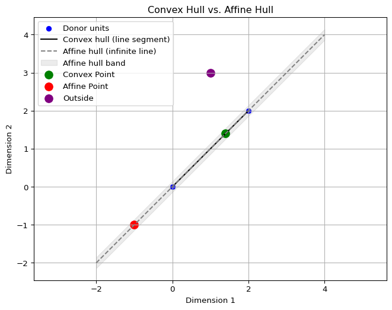
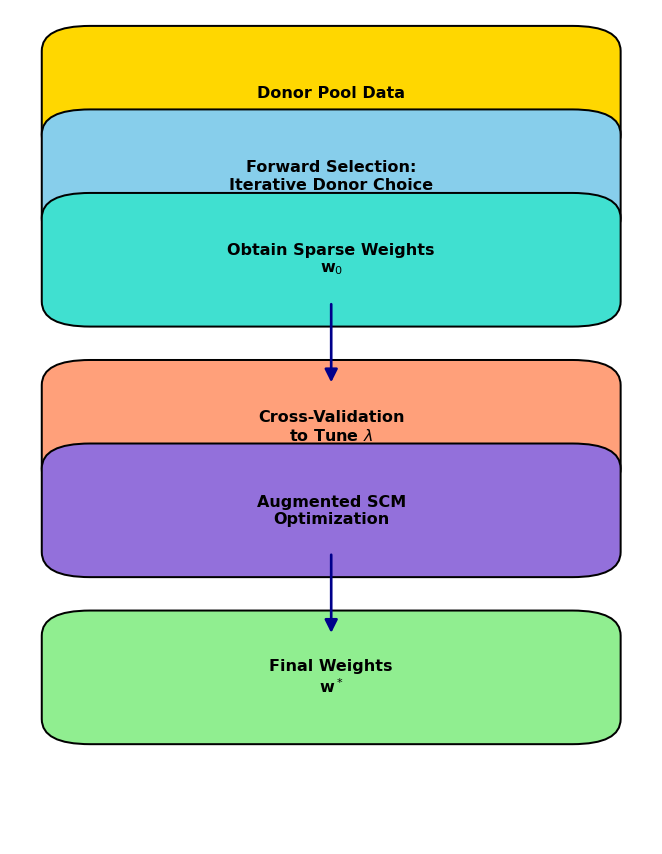
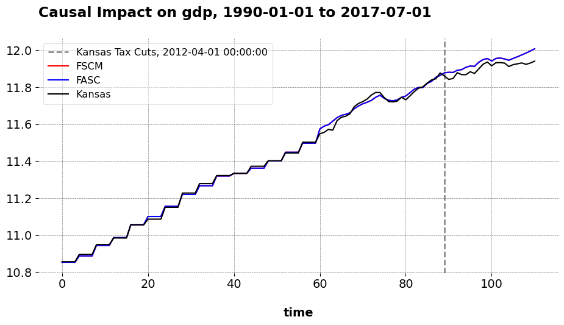
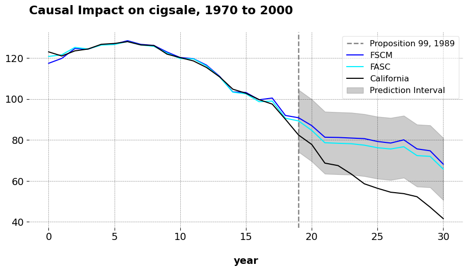

Forward Augmented Synthetic Controls
Causal Inference
Econometrics
Introduction
Synthetic Control Methods (SCM) is a widely used framework for estimating causal effects when randomized experiments are not feasible. At its core, SCM constructs a weighted average of control (donor) units to approximate the treated unit’s pre-treatment trajectory. The goal is to find an in-sample/pre–treatment average of controls that closely mirrors the treated unit before the intervention.
Much of the method’s credibility hinges on the quality of this pre-treatment fit. Econometricians regularly warn that poor pre-treatment fit undermines the validity of SCM estimates. Even if the optimization problem is formally well-posed, poor alignment between the treated unit and its in-sample match can lead to substantial bias. The intuition is straightforward: if similar units are assumed to behave similarly, a control group that fails to mimic the treated unit before treatment is unlikely to produce a credible counterfactual afterward. Just as important as pre-treatment fit is the composition of the donor pool. Including irrelevant or poorly matched units, or omitting relevant ones, can distort the synthetic weights and lead to misleading inferences. But how should the donor pool be chosen?
One increasingly popular solution to the imperfect match is the Augmented Synthetic Control Method (ASCM), known in industry through Meta’s GeoLift library. Shops like Recast use it, and data scientists such as Mandy Liu and Svet Semov have helped bring it to applied audiences.
Methods for donor pool selection have also received attention. In fact, this is part of what makes GeoLift so popular: it attempts to identify the most similar markets to a treated group before the intervention. In academic settings, approaches like forward selection, and even random forests have been proposed to automate or guide the choice of appropriate donors.
But what if we can do better?
In previous posts, I’ve written about donor selection strategies and how to handle imperfect pre-treatment fit. In this post, I introduce a synthesis of both: the Forward Augmented Synthetic Control estimator. By combining forward selection with a bias correction step, I show that we can reduce in-sample risk relative to the standard ASCM and Forward SCM alone. This approach is illustrated using two popular SCM case studies: the Kansas tax cut experiment and California’s Proposition 99.
Notations
Let \(\mathbb{R}\) denote the set of real numbers. Calligraphic letters, such as \(\mathcal{S}\), represent discrete sets with cardinality \(S = |\mathcal{S}|\). Let \(j \in \mathbb{N}\) index a total of \(N\) units and \(t \in \mathbb{N}\) index time. Unit \(j=1\) is the treated unit, with the set of control units \(\mathcal{N}_0 = \mathcal{N} \setminus \{1\}\) of cardinality \(N_0\). The pre-treatment period is \(\mathcal{T}_1 = \{ t \in \mathbb{N} : t \le T_0 \}\) and the post-treatment period is \(\mathcal{T}_2 = \{ t \in \mathbb{N} : t > T_0 \}\). The observed outcome for unit \(j\) at time \(t\) is \(y_{jt}\), and the outcome vector for unit \(j\) is \(\mathbf{y}_j = (y_{j1}, \dots, y_{jT})^\top \in \mathbb{R}^T\). The treated unit’s outcome vector is \(\mathbf{y}_1\), and the donor matrix is \(\mathbf{Y}_0 = \begin{bmatrix} \mathbf{y}_j \end{bmatrix}_{j \in \mathcal{N}_0} \in \mathbb{R}^{T \times N_0}\).
Geometry
I frequently consider linear combinations of donor outcomes. The convex hull of the donor vectors is
\[ \operatorname{conv}(\{\mathbf{y}_j\}_{j \in \mathcal{N}_0}) = \Big\{ \mathbf{Y}_0 \mathbf{w} \;\Big|\; \mathbf{w} \in \mathbb{R}_{\ge 0}^{N_0}, \;\mathbf{1}^\top \mathbf{w} = 1 \Big\}, \]
and the affine hull is
\[ \operatorname{aff}(\{\mathbf{y}_j\}_{j \in \mathcal{N}_0}) = \Big\{ \mathbf{Y}_0 \mathbf{w} \;\Big|\; \mathbf{w} \in \mathbb{R}^{N_0}, \;\mathbf{1}^\top \mathbf{w} = 1 \Big\}. \]
While both involve weighted averages of donors, the convex hull restricts weights to be non-negative, whereas the affine hull allows negative weights and extrapolation beyond the convex hull.
The corresponding sets of feasible weights are
\[ \mathcal{W}_{\mathrm{conv}} = \{ \mathbf{w} \in \mathbb{R}_{\ge 0}^{N_0} \mid \mathbf{1}^\top \mathbf{w} = 1 \}, \quad \mathcal{W}_{\mathrm{aff}} = \{ \mathbf{w} \in \mathbb{R}^{N_0} \mid \mathbf{1}^\top \mathbf{w} = 1 \}. \]
In two dimensions, the convex hull of two donor points is the line segment connecting them. It represents all convex combinations of the donors, where the weights are nonnegative and sum to one. In the figure above, this is shown as the black line segment, and the green point lies within it because its weights are both positive and sum to one. By contrast, the affine hull is the entire infinite line passing through the donors.
Affine combinations also require weights to sum to one, but they may be negative, which allows extrapolation beyond the segment (though practically we may force the weights to be between negative one and positive one, what we’d call a kind of polytope). The dashed gray line in the figure illustrates the affine hull, and the red point lies outside the convex segment but on this line because one weight is negative.
Any point not on this line at all cannot be expressed as an affine combination, as shown by the purple point. The key difference is that the convex hull is bounded and interpolative, while the affine hull is unbounded and permits extrapolation arbitrarily far from the observed donor points.
Synthetic Controls
The classic SCM estimator solves
\[ \mathbf{w}^{\mathrm{SCM}} = \underset{\mathbf{w}^{\mathrm{SCM}} \in \mathcal{W}_{\mathrm{conv}}}{\operatorname*{argmin}} \; \left\| \mathbf{y}_1^{\mathcal{T}_1} - \mathbf{Y}_0^{\mathcal{T}_1} \mathbf{w}^{\mathrm{SCM}} \right\|_2^2, \]
where \(\mathcal{W}_{\mathrm{conv}} = \{\mathbf{w}^{\mathrm{SCM}} \in \mathbb{R}_{\ge 0}^{N_0} \mid \mathbf{1}^\top \mathbf{w} = 1\}\). This finds the weight vector \(\mathbf{w}^{\mathrm{SCM}}\) that best matches the treated unit’s pre-treatment outcomes as a weighted average of donor outcomes.
Forward Selection SCM (FSCM)
FSCM constructs a synthetic control iteratively by adding one donor at a time. Starting from the empty set \(\mathcal{S} = \emptyset\), at each iteration the algorithm considers each candidate donor \(j \in \mathcal{N}_0 \setminus \mathcal{S}\) and forms \(\mathcal{S}^\prime = \mathcal{S} \cup \{j\}\). For each candidate set \(\mathcal{S}^\prime\), it solves the restricted SCM problem over the donor submatrix \(\mathbf{Y}_0^{\mathcal{S}^\prime}\), defined as the columns of \(\mathbf{Y}_0\) corresponding to units in \(\mathcal{S}^\prime\):
\[ \mathbf{w}_{\mathcal{S}^\prime}^\ast = \underset{\mathbf{w} \in \mathcal{W}_{\mathrm{conv}}(\mathcal{S}^\prime)}{\operatorname*{argmin}} \; \left\| \mathbf{y}_1^{\mathcal{T}_1} - \mathbf{Y}_0^{\mathcal{T}_1, \mathcal{S}^\prime} \mathbf{w} \right\|_2^2 \]
where
\[ \mathcal{W}_{\mathrm{conv}}(\mathcal{S}^\prime) = \left\{ \mathbf{w} \in \mathbb{R}_{\ge 0}^{|\mathcal{S}^\prime|} \;\middle|\; \mathbf{1}^\top \mathbf{w} = 1 \right\}. \]
The donor selected at each iteration is
\[ j^\ast = \underset{j \in \mathcal{N}_0 \setminus \mathcal{S}}{\operatorname*{argmin}} \; \min_{\mathbf{w} \in \mathcal{W}_{\mathrm{conv}}(\mathcal{S} \cup \{j\})} \left\| \mathbf{y}_1^{\mathcal{T}_1} - \mathbf{Y}_0^{\mathcal{T}_1}{}_{\mathcal{S} \cup \{j\}} \mathbf{w} \right\|_2^2 \]
and it is then added to the selected set by updating
\[ \mathcal{S} \leftarrow \mathcal{S} \cup \{j^\ast\}. \]
The donor selection process proceeds sequentially according to this forward selection rule. In principle, the procedure may continue until all donor units have been exhausted, but in practice analysts use stopping rules to terminate the selection at a sensible point.
Exhaustive Search
In the exhaustive option, selection proceeds until the pre-treatment mean squared error (MSE) is minimized over all candidate donor subsets. Let \(\mathcal{P}(\mathcal{N}_0)\) denote the power set of donor indices, and for any \(S \subseteq \mathcal{N}_0\), define the within–pre-treatment fit as
\[ \text{MSE}(S) = \frac{1}{T_0} \min_{\mathbf{w} \in \mathcal{W}_{\mathrm{conv}}(S)} \left\| \mathbf{y}_1 - \mathbf{Y}_0^S \mathbf{w} \right\|_2^2, \]
where
\[ \mathcal{W}_{\mathrm{conv}}(S) = \left\{ \mathbf{w} \in \mathbb{R}_{\ge 0}^{|S|} \;\middle|\; \mathbf{1}^\top \mathbf{w} = 1 \right\}. \]
The exhaustive-search estimator iestimates \(\sum_{i=0}^{k-1} (N_0 - i) = k N_0 - \frac{k(k-1)}{2}\) total models. It chooses
\[ S^\ast = \underset{S \in \mathcal{P}(\mathcal{N}_0)}{\operatorname*{argmin}} \; \text{MSE}(S), \qquad \mathbf{w}_{S^\ast}^\ast = \underset{\mathbf{w} \in \mathcal{W}_{\mathrm{conv}}(S^\ast)}{\operatorname*{argmin}} \; \left\| \mathbf{y}_1^{\mathcal{T}_1} - \mathbf{Y}_0^{\mathcal{T}_1,S^\ast} \mathbf{w} \right\|_2^2. \]
This means we continue until all donors are eventually selected.
Information Criteria, per Shi and Huang, 2023
Another option is to rely on a model selection criterion, such as the modified BIC (mBIC), which balances pre-treatment fit with model complexity. The modified BIC for a selected set \(S\) of donor units is defined as
\[ \text{mBIC}(S) = T_0 \cdot \log(\text{MSE}) + |S| \cdot \log(T_0), \]
where
\[ \text{MSE} = \frac{1}{T_0} \left\| \mathbf{y}_1^{\mathcal{T}_1} - \mathbf{Y}_0^{\mathcal{T}_1, S} \mathbf{w}_S \right\|_2^2. \]
The forward selection procedure may terminate when adding a new donor increases the penalized error:
\[ \text{mBIC}(S \cup \{j\}) > \text{mBIC}(S). \]
Donor Pool Cap
A final practical option is to impose an upper bound on the number of selected donors. When a cardinality cap is imposed, let \(p \in (0,1]\) and \(K = \lfloor p N_0 \rfloor\), so that the search is restricted to subsets \(S \subseteq \mathcal{N}_0\) with \(|S| \le K\). The corresponding FSCM estimator chooses
\[ S^\ast = \underset{\substack{S \subseteq \mathcal{N}_0 \\ |S| \le K}}{\operatorname*{argmin}} \; \text{MSE}(S), \qquad \mathbf{w}_{S^\ast}^\ast = \underset{\mathbf{w} \in \mathcal{W}_{\mathrm{conv}}(S^\ast)}{\operatorname*{argmin}} \; \left\| \mathbf{y}_1 - \mathbf{Y}_0^{S^\ast} \mathbf{w} \right\|_2^2. \]
Whichever variant of the forward selection algorithm is used—exhaustive search, model selection, or cardinality constraint—the result is a selected subset of donors \(S^\ast \subseteq \mathcal{N}_0\) and a corresponding optimal weight vector \(\mathbf{w}_{S^\ast}^\ast \in \mathbb{R}^{|S^\ast|}\). To unify notation and simplify presentation going forward, we define the final forward-selected weights by embedding this sparse solution into the full donor space:
\[ w_j^{\mathrm{FSCM}} = \begin{cases} \left(\mathbf{w}_{S^\ast}^\ast\right)_j, & \text{if } j \in S^\ast, \\\\ 0, & \text{otherwise}. \end{cases} \]
Equivalently, let \(\mathbf{w}^{\mathrm{FSCM}} \in \mathbb{R}^{N_0}\) be the zero-padded extension of \(\mathbf{w}_{S^\ast}^\ast\), such that it assigns zero weight to all donors not selected by FSCM. This implementation provides flexibility in practice: exhaustive evaluation is feasible in low-dimensional settings, while early stopping or a capped selection is recommended in high-dimensional applications. The algorithm in mlsynth issues a warning if the donor pool contains 200 or more units.
The Augmented Synthetic Control Estimator
Building on this baseline formulation, the ASCM introduces a regularization term that penalizes deviations of the weight vector from a reference or initial weight vector, \(\mathbf{w}_0\). The augmented objective can be written as
\[ \mathbf{w}^{\mathrm{aug}} = \underset{\mathbf{w}^{\mathrm{aug}} \in \mathcal{W}_{\mathrm{aff}}}{\operatorname*{argmin}} \; \left\| \mathbf{y}_1^{\mathcal{T}_1} - \mathbf{Y}_0^{\mathcal{T}_1} \mathbf{w}^{\mathrm{aug}}\right\|_2^2 + \lambda \left\|\mathbf{w}^{\mathrm{aug}}-\mathbf{w}^{\mathrm{SCM}} \right\|_2^2. \]
where \(\lambda \ge 0\) controls the strength of the penalty.
About that lambda…
Note
One may ask “Jared, why did you include the penalty on the weight deviation term instead of the fit term, as Ben-Michael and co. do in Equation 18 of their paper?” Here’s why.
In ASCM, the placement of the regularization parameter \(\lambda\) determines how the estimator balances pre-treatment fit and fidelity to the original SCM weights. Their formulation minimizes:
\[ \mathbf{w}^\ast_{\text{alt}} = \underset{\mathbf{w}^{\mathrm{aug}} \in \mathcal{W}_{\mathrm{aff}}}{\operatorname*{argmin}} \; \lambda \|\mathbf{y}_1^{\mathcal{T}_1}- \mathbf{Y}_{0}^{\mathcal{T}_1}\mathbf{w}^{\mathrm{aug}}\|_2^2 + \|\mathbf{w}^{\mathrm{aug}}-\mathbf{w}^{\mathrm{SCM}}\|_2^2 \]
while ours solves:
\[ \mathbf{w}^{\mathrm{aug}}= \underset{\mathbf{w}^{\mathrm{aug}} \in \mathcal{W}_{\mathrm{aff}}}{\operatorname*{argmin}} \; \|\mathbf{y}_1^{\mathcal{T}_1} - \mathbf{Y}_0^{\mathcal{T}_1} \mathbf{w}^{\mathrm{aug}}\|_2^2 + \lambda \|\mathbf{w}^{\mathrm{aug}} -\mathbf{w}^{\mathrm{SCM}}\|_2^2 \]
It turns out these are mathematically equivalent under a simple reparameterization. If we define \(\lambda_{\text{alt}} = \frac{1}{\lambda_{\text{aug}}}\), then both objectives yield the same solution. This follows directly from the first-order conditions of each problem, which differ only by a scaling of the Lagrange multiplier. So in truth, it’s just a matter of which interpretation you find more natural.
I personally prefer our formulation because as \(\lambda \to \infty\), the penalty on deviation dominates, and \(\mathbf{w}^\ast_{\text{aug}}\) collapses to the projection of \(\mathbf{w}^{\mathrm{SCM}}\) onto the affine constraint. In other words, when the original FSCM fit is already good, we want to stick close to it. Conversely, as \(\lambda \to 0\), the regularization term disappears and the solution becomes the best-fitting affine combination of the donor units, completely unconstrained by the initial weights. That’s appropriate when the original fit is poor and we’re willing to learn something new (although this is probably going to be uncommon in practice). So while the math is equivalent, the perspective isn’t. I find it much more natural to think of \(\lambda\) as controlling how much I “trust” the prior weights. And that’s easier to reason about when \(\lambda\) is attached to the deviation term.
The intuition here is pretty simple. If the SCM weights are already giving us good pre-treatment fit, then there is little incentive to extrapolate away from the original (F)SCM solution. However, if there’s need for better fit, then we will extrapolate away from the convex hull solution. In practice, Ben-Michael and co advocate for choosing lambda via cross validation.
Forward Augmented Synthetic Controls
The FASC estimator combines two complementary ideas: sparse donor selection via forward selection and bias correction via affine augmentation. It begins with FSCM, while all other donor units initially have zero weight. FASC then allows the estimator to adjust all weights, including those outside the original selection, by solving the following program
\[ \mathbf{w}^{\mathrm{FASC}} = \underset{\mathbf{w}^{\mathrm{FASC}} \in \mathcal{W}_{\mathrm{aff}}}{\operatorname*{argmin}} \; \left\| \mathbf{y}_1^{\mathcal{T}_1} - \mathbf{Y}_0^{\mathcal{T}_1} \mathbf{w}^{\mathrm{FASC}} \right\|_2^2 + \lambda \left\| \mathbf{w}^{\mathrm{FASC}} - \mathbf{w}^{\mathrm{FSCM}} \right\|_2^2. \]
Here, \(\lambda \ge 0\) controls the strength of the penalty toward the original forward-selected weights. When \(\lambda\) is large, the solution remains close to \(\mathbf{w}^{\mathrm{FSCM}}\), preserving sparsity and interpretability; when \(\lambda\) is small, the estimator prioritizes pre-treatment fit and may assign positive or negative weights to donors outside the original selection.
In practice, the regularization parameter \(\lambda\) is chosen via time-split cross-validation on the pre-treatment period. The first half of the pre-treatment data (training set) is used to fit candidate weights \(\mathbf{w}(\lambda)\):
\[ \mathbf{w}^{\mathrm{FASC}}(\lambda) = \underset{\mathbf{w}^{\mathrm{FASC}} \in \mathcal{W}_{\mathrm{aff}}}{\operatorname*{argmin}} \left\| \mathbf{y}_{\mathrm{train}} - \mathbf{Y}_{0,\mathrm{train}} \mathbf{w}^{\mathrm{FASC}} \right\|_2^2 + \lambda \left\| \mathbf{w}^{\mathrm{FASC}} - \mathbf{w}^{\mathrm{FSCM}} \right\|_2^2, \]
and the second half of the pre-treatment data (validation set) is used to evaluate the out-of-sample prediction error:
\[ \mathrm{CV\text{-}RMSE}(\lambda) = \left\| \mathbf{y}_{\mathrm{val}} - \mathbf{Y}_{0,\mathrm{val}} \mathbf{w}^{\mathrm{FASC}}(\lambda) \right\|_2. \]
The \(\lambda\) minimizing this cross-validated error balances fidelity to the original forward-selected weights with pre-treatment fit. To explore the hyperparameter space efficiently, Bayesian optimization can be used over \(\log_{10}(\lambda)\), for example \(\log_{10}(\lambda) \in [-2, 3]\), with a Gaussian Process modeling the CV-RMSE function and Expected Improvement guiding sequential evaluations. I do this using skopt, but presumably other methods can be used as well.
An important property of FASC is that its in-sample MSE is never worse than that of the original FSCM solution. Formally, let
\[ \text{MSE}^{\mathrm{FASC}} = \frac{1}{T_0} \left\| \mathbf{y}_1^{\mathcal{T}_1} - \mathbf{Y}_0^{\mathcal{T}_1} \mathbf{w}^{\mathrm{FASC}} \right\|_2^2, \quad\text{and}\quad \text{MSE}^{\mathrm{FSCM}} = \frac{1}{T_0} \left\| \mathbf{y}_1^{\mathcal{T}_1} - \mathbf{Y}_0^{\mathcal{T}_1} \mathbf{w}^{\mathrm{FSCM}} \right\|_2^2. \]
Because \(\mathbf{w}^{\mathrm{FSCM}}\) is feasible in the FASC optimization problem, it follows that
\[ \text{MSE}^{\mathrm{FASC}} \leq \text{MSE}^{\mathrm{FSCM}}. \]
In other words, the in-sample fit of FASC is guaranteed to be at least as good as FSCM, and typically better due to the additional flexibility in the affine combinations allowed.

Conformal Prediction Intervals
To quantify uncertainty around the estimated counterfactual trajectory, we apply conformal prediction intervals based on block-permuted pre-treatment residuals. These intervals are distribution-free, require no assumptions about the data-generating process, and provide valid finite-sample marginal coverage. Let \(\hat{y}_t^{\text{cf}}\) denote the estimated counterfactual outcome at time \(t\), and let \(y_t^{\text{obs}}\) be the observed outcome. We begin by computing residuals for all time periods:
\[ \varepsilon_t = y_t^{\text{obs}} - \hat{y}_t^{\text{cf}}. \]
We then construct a conformal score by calculating the mean absolute residual over the post-treatment period. To simulate the distribution of this score under the null (i.e., assuming no treatment effect), we perform circular block permutations of the residual vector and recompute the same statistic for each shifted version.
This yields an empirical distribution of conformal scores under the null. We take the \((1 - \alpha)\) quantile of this distribution as our conformal threshold, denoted \(q_{1 - \alpha}\). To center the interval, we compute the mean residual over the pre-treatment period:
\[ \bar{\varepsilon} = \frac{1}{T_0} \sum_{t \leq T_0} \varepsilon_t. \]
The conformal prediction interval for each post-treatment time \(t > T_0\) is then given by:
\[ \left[ \hat{y}_t^{\text{cf}} + \bar{\varepsilon} - q_{1 - \alpha},\ \hat{y}_t^{\text{cf}} + \bar{\varepsilon} + q_{1 - \alpha} \right]. \]
This approach ensures that the prediction intervals account for uncertainty in the counterfactual trajectory while adjusting for systematic bias in the pre-treatment fit. The shaded regions in our figures visualize these conformal intervals.
Kansas Tax Cuts
Here are the results of the FASC method.
/opt/hostedtoolcache/Python/3.13.7/x64/lib/python3.13/site-packages/mlsynth/utils/datautils.py:434: FutureWarning:
The default of observed=False is deprecated and will be changed to True in a future version of pandas. Pass observed=False to retain current behavior or observed=True to adopt the future default and silence this warning.

I compare the pretreatment fit of FSCM, FASC, and ASCM.
| Estimator | Pre-RMSE | Post-RMSE | R² | Notes |
|---|---|---|---|---|
| FSCM | 0.012 | 0.014 | 0.999 | Baseline sparse estimator |
| FASC | 0.012 | 0.014 | 0.999 | Ridge-augmented refinement |
| Ben Michael (SCM) | 0.90 | – | – | Some imbalance |
| Ben Michael (ASCM) | 0.65 | – | – | RMSE reduced by ~28% from SCM |
Both FSCM and FASC achieve nearly identical performance, with a pre-RMSE of 0.012 and an out-of-sample RMSE of 0.014. Since the donor selection is already good, the addition of regularization does not improve predictive accuracy, indicating that the original FSCM fit is already near-optimal. In contrast, the original SCM fit exhibits a much larger pre-RMSE of 0.90. While ASCM reduces this error to 0.65, the improvement is modest by comparison to FASC. Relative to these benchmarks, the FASC approach achieves a 98.7% reduction in pre-RMSE compared to standard SCM, and a 98.2% reduction compared to FSCM. Of course, these were just the default settings; for higher dimensional donor pools, we could use either of the stopping rules described above.
Proposition 99
I compare the effect of Proposition 99 on cigarette sales in California using FASC, FSCM, and the original SCM. While all three detect a significant reduction in sales, the quality of pretreatment fit varies meaningfully.
import pandas as pd # To work with panel data
from mlsynth import FSCM
url = "https://raw.githubusercontent.com/jgreathouse9/mlsynth/refs/heads/main/basedata/smoking_data.csv"
data = pd.read_csv(url)
config = {
"df": data,
"outcome": data.columns[2],
"treat": data.columns[-1],
"unitid": data.columns[0],
"time": data.columns[1],
"display_graphs": True,
"save": False,
"counterfactual_color": ["blue", "#00F0FF"], "use_augmented": True}
arco = FSCM(config).fit()
| Estimator | ATT | Pre-RMSE | \(R^2\) |
|---|---|---|---|
| FASC | -16.76 | 0.935 | 0.993 |
| FSCM | -19.51 | 1.656 | 0.979 |
| ADH (Stata) | -19.00 | 1.76 | — |
FASC achieves the best pretreatment fit, with a root mean squared error of 0.935 and an \(R^2\) of 0.993. This represents a 46% reduction in pre-RMSE compared to FSCM and a 47% reduction relative to the original ADH implementation. The improved fit comes with a slightly smaller estimated ATT (-16.76) compared to FSCM (-19.51) and ADH (-19.00), suggesting that regularized, forward-selected models may, if slightly, temper exaggerated effects while maintaining excellent in-sample risk.
FASC produces weights that differ notably from both FSCM and the original SCM with covariates. While the vanilla FSCM weights are sparse and non-negative, concentrated on a small set of donors such as Utah, Montana, Nevada, and Connecticut, the FASC weights are less sparse and include small negative values, as we would expect. These negative weights allow it to extrapolate slightly beyond the convex hull formed by the donors. Importantly, the FASC weights still maintain the core donor pool emphasized by the vanilla FSCM, with similar magnitudes on key states. For example, Utah (~0.38), Montana (~0.24), Nevada (~0.21), and Connecticut (~0.14). The original SCM with covariates also concentrates weight on a similar subset of donors, including Utah, Nevada, Montana, Colorado, and Connecticut, demonstrating stability in donor selection across methods.
The presence of small negative weights in the FASC, assigned to peripheral donors such as Alabama, Mississippi, and Tennessee, acts as fine-tuning adjustments to better capture the treated unit’s trajectory. Machine learning scientsts have remarked that there’s not obvious reason why the donor weights need to bo convex; Ben-Michael, Feller, and Rothstein argue that such extrapolation, provided that it is controlled, is worth it in settings where the base estimator produces poor in-sample risk. Overall, these patterns underscore how FASC refines the base synthetic control weights, offering a nuanced improvement over vanilla forward selection by reducing bias without sacrificing the stability or interpretability of the donor composition.
Implications
By integrating these two ideas, FASC addresses both common challenges in synthetic control applications that marketers and economists often face: interpolation biases/non-uniqueness when the donor pool is high-dimensional, and imperfect pre-treatment fit when FSCM weights alone are insufficient. If FSCM already achieves excellent pre-treatment fit, FASC will closely track it. If FSCM performs reasonably well but leaves some residual imbalance, the augmentation allows controlled deviation to further improve the synthetic control. The discrepancy penalty keeps the solution interpretable by favoring the forward-selected weights when the original fit is already strong.
Compared to alternative donor selection mechanisms, such as Geolift’s dynamic time warping (DTW), forward selection is computationally efficient and scales better to high-dimensional settings. DTW aligns entire time series pairwise, which can be slow and less suitable when there are many more control units than pre-treatment periods. Even simpler correlation-based approaches, which GeoLift also offers, may struggle with complex temporal patterns, highlighting the advantage of forward selection combined with affine augmentation.
Finally, FASC as presented assumes a single treatment time for the treated unit. In many real-world scenarios, treatments are staggered across units. Extending FASC to these settings would require a (partially) pooled approach, balancing the fit of individual synthetic controls against capturing the best fit across cohorts. Deriving Cohort ATTs in this setting would allow meaningful causal inference even when treated units receive the intervention at different calendar times.
Data Science for Policy Analysts: A Simple Introduction to Web Scraping
Web Scraping
Python
Forward Selected Synthetic Control
Machine Learning
Econometrics
Synthetic Controls With More Than One Outcome
Causal Inference
Econometrics
Synthetic Control Methods for Personalized Causal Inference
Causal Inference
Econometrics
Synthetic Controls Do Not Care What Your Donors Are. So Why Do You?
Econometric Theory
Synthetic Controls With Non-Linear Outcome Trends: A Principled Approach to Extrapolation
Causal Inference
Econometrics
The Iterative Synthetic Control Method
Econometrics
The Synthetic Historical Control Method
Econometrics
What is a Synthetic Control?
Econometrics
Causal Inference
What Are We Weighting For?
Econometric Theory
Synthetic Controls for Marketing Experiments
Experiments
Econometrics
No matching items